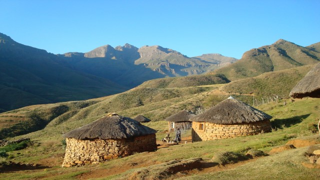
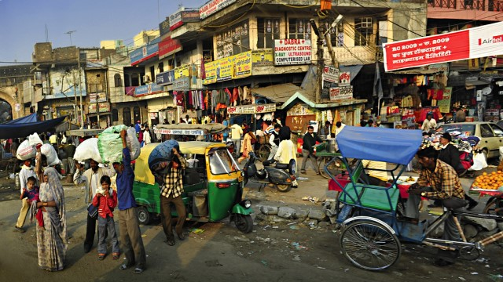
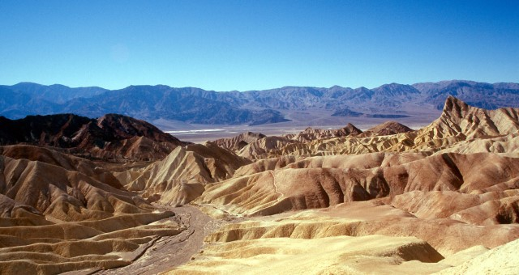
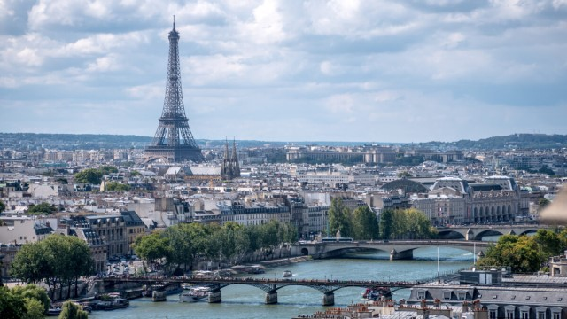
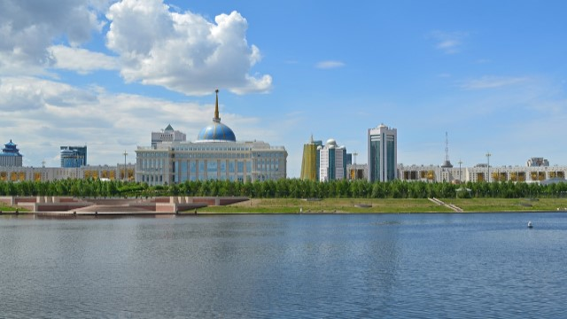
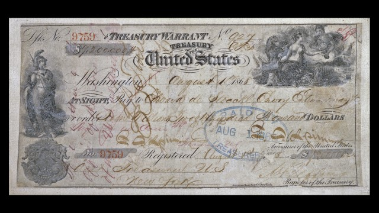

Question 1. What is the only country which lies entirely over 1000m in elevation? Answer: Lesotho
Lesotho is one of three enclave states in the world and resides within South africa. Its lowest point is 1400m over sea level
and its the only sovereign state entirely over 1000m over sea level. The nation is a Kingdom with a size comparable to Belgium
and it has about 2 million inhabitants.

Question 2. What country has the highest population? Answer: India
India has since the start of 2023 been the largest country by population followed by China. They are home to over 1.4 billion people.
This means they have about 18% of all the worlds people. This was the first time since the UN started keeping records of population in 1950
that China has been de-throwned in population but it is not that surprising considering that China's birthrate has stagnated over the last
decades while indias birthrate has stayed significantly higher.

Question 3. Where was the hottest temperature ever recorded? Answer: Death Valley, US
Death Valley is part of the Mojave desert in the western United States and it is also the lowest elevated part in the US.
Death Valley is located in the Badwater Basin and all of these conditions together create the extremely hot weather.
The temperature they recorded was 56.7 Celsius in July of 1913. The recording was made within a small village called Furnace creek
(fitting name) which sits within Death Valley.

Question 4. Which country spans the most timezones? Answer: France
While a lot of countries may be much larger then france it still has the most timezones of any nation. This is because
of all their overseas territories over the world which combined makes France span 12 timezones (13 with their antarctic claim).
This lets them beat out number 2 on the list which is Russia who spans a whole 11 timezones. So the saying that the sun never sets in
the british empire is probably better suited for France.

Question 5. Which is the largest landlocked country? Answer: Kazakhstan
Kazakhstan is the 19th largest nation in the world and it's the largest landlocked nation infront of Mongolia. Kazakhstan used to be
part of the USSR until its collapse in 1991 when it for a few days became the last member of the USSR after Russia left. Kazakhstan
is also one of the least densly populated nations at 7 people per kilometer squared.

Question 6. When did the US purchase alaska from Russia? Answer: 1867
Alaska was purchased from the Russian empire in 1867 for 7.2 million USD. The reason Russia sold it so cheap was because the last was seen
as useless at the time as it was majorly frozen over and didn't have a lot of economic activity. in recent years Alaska has become quite
important for the US as they have found oil deposits there and Anchorage airport is a very busy cargo airport to connecting North America with
Asia and Europe.
